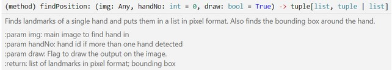

Project Report
Elevator Pitch
Prosthetics have many applications, from medical uses to research and development. This project involves building a prosthetic hand that can shadow a user’s movements through a camera. The prosthetic is actuated from an arduino using 9g servo motors. The current state of the prosthetic can be monitored remotely from a web-based HMI. A potential challenge is the amount of time it takes to 3D print the many components required for the hand assembly. This project follows many of the concepts that we have learned in this course, from Python and Arduino programming, to MQTT and JSON objects.
Cover Image

Skill Level
Intermediate
This project involves 3 different programming languages: Python, C/C++, and Javascript. The electronics are simple. The web server requires a small amount of Ubuntu familiarity to set up. You will need access to a 3D printer and be able to print pre-modelled parts.
Tags
#arduino, #web, #robots, #InternetOfThings
Contributors
Walid → Arduino code, Documentation
Muizz → Python code, Assembly, Wiring
Adam → MQTT, 3D Printing, HMI
Bill of Materials
Tools
- 3D printer
- PLA filament
- Needle nose pliers
- Arduino power supply
- Laptop
- Web hosting service
Schematic
Project Links
ProjectHub: https://create.arduino.cc/projecthub/457950/robotic-hand-55cdfc
CAD Models(not by us): http://inmoov.fr/inmoov-stl-parts-viewer/?bodyparts=Right-Hand
Github: https://github.com/adamas0014/RoboticHand
Website: http://137.184.160.213/4ID3Project/index.php
Note: I didn't pay for certificates so you’ll need to press “i understand the risks” to enter the site
Software
In this project, we used a premade tensor flow model library that used OpenCV to identify a left or right hand and determine the position of each finger. It then parses this object and assigns the value of “1” or “0” in an array depending on the state. If the state is different than the previous state, it will send the new state over the COM port in the format $10010. It then formats the data as a JString and sends it over MQTT to a preassigned server and topic.
IoT Drawing
Video
Video of Hand Video of HMIConclusion
he goal of this project is to put together a prosthetic learning demonstration tool that covers the many IoT concepts that we have learned in this course. This includes arduino development using arduino IDE, Python programming using some simple computer vision functions, Pub/Sub to an MQTT server, and Serial Communication between the microcontroller and the host machine.
The most difficult aspect of the project was assembling the 3D printed parts together and making the links between the servos and the fingers of the robot hand. Furthermore, troubleshooting the code proved to be difficult since it did not work exactly the same as in the video the project was made off of. One reason could be the cvzone library in python, the library’s latest version removes an important function called “findposition” which would send the position of the hand from the video feed to the arduino and have the servos move to imitate the position of the users hand. To troubleshoot this problem a different code was written but it was not able to execute the same task as the ‘findposition’ function from cvzone’s hand tracking module.
A fair way to evaluate the project is through the programming of each subsystem(web HMI, python script, and Arduino program), the assembly of the apparatus, and the electrical connections of the servo’s to the microcontroller. These components contribute to the goal of having a functioning prosthetic that mirrors the motion of a physical hand and sends its status to a remote HMI.
The software can be improved upon in terms of reliability and precision of motion. It was found that the orientation of the wrist of the hand that is being mirrored has a large impact on the tensor flow model’s ability to discern each finger. If we had more time, we could investigate the model more in-depth and aim to improve its effectiveness. With precision, the tensorflow library returns an array of binary 1’s and 0’s to represent the position of each finger. For more elaborate hand movements, more information on the position of each finger would be needed.
The hardware can be improved by modeling and 3D printing a sturdier base for the controls hardware. Currently, the microcontroller and servo motors are mounted on a cardboard base, which is fine for testing but doesn’t look appealing and would get damaged over time.